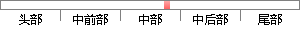

因此中本聪提出了一种解决方案，该系统通过随机散列对全部交易记录加上时间戳，将他们合并进一个持续增长的基于随机散列的工作量证明(proof-of-work)的链条作为交易记录，除非重新完成所有的工作量证明，否则这条链条被认为是不可更改的。
片段位置图

相似结果|
相似片段 1：在某种程度上解决了双重支付的问题，但是仍然需要第三方的支持，中本聪在文中提出一种解决方案，使现金系统在点对点的环境下运行，并防止双重支付问题。该网络通过随机散列对全部交易加上时间戳，将它们合并入一个不断延伸的基于随机散列的工作量证明的链条作为交易记录，除非重新完成全部的工作量证明，形成的交易记录将不可更改。
相似片段 2：交易(1)防止双重支付。因为在互联网中，数字产品的边际成本为零，也就是复制成本为零，所以防止比特币的重复支付，是支付系统需要首先解决的问题。中本聪提出，一种防止双重支付问题的解决方案。该网络通过随机散列对全部交易加上时间戳，将它们加入一个基于随机散列的工作量证明的链条，作为交易记录，除非重新完成全部的工作量证明，形成的交易记录将不可更改。
|
※ 片段修改建议 ※
近似词参考：- 因此：是以 因而
- 系统：体系
- 通过：经由过程
- 全部：全数 扫数 所有 悉数 全体 整个
- 交易：买卖 生意业务
- 记录：记实 纪录 记载
- 加上：加之
- 时间：时候
- 合并：归并
- 证明：证实
- 交易：买卖 生意业务
- 记录：记实 纪录 记载
- 重新：从头 从新
- 所有：全部
- 证明：证实
- 否则：不然
- 不可：不成 不行 弗成
系统自动生成语句：是以中本聪提出了一种解决方案，该体系经由过程随机散列对全数买卖记实加之时候戳，将他们归并进一个持续增长的基于随机散列的工作量证实(proof-of-work)的链条作为买卖记实，除非从头完成全部的工作量证实，不然这条链条被认为是不成更改的。
注：本片段修改建议为系统自动生成，仅供参考。